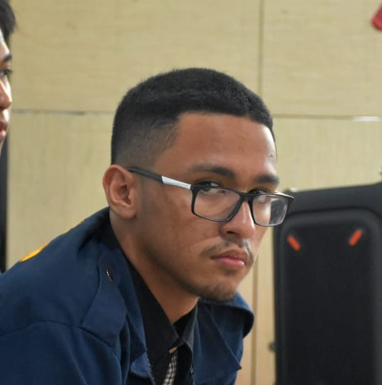

Muhammad
Fakhry HaidarTelefon
- +62 813-9926-7721
- +62 812-9885-8695
Keahlian
- Ilustrasi (Mid)
- Front-End Web (Low)
- Desain (Mid)
Bahasa
- Indonesia (High)
- English (Low)
- Japanese (Weeb)
Surel
- anteikuwute@gmail.com